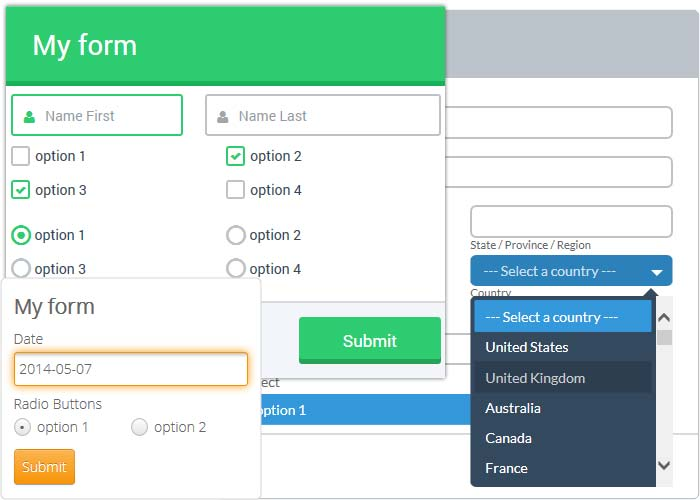

FormBuilder is a free desktop app that helps you easily create
jquery forms, secure contact form, php contact form, css form and more in a few seconds without writing a single line of code. Create fresh online forms in just a few clicks.
It is very well known by entrepreneurs, businessmen, companies, service providers, etc., that one of the most important tools to manage before opening a business or enhancing a service or product is customer´s opinion.
Customer´s opinion can be collected in several ways. Almost everyone has at least filled in one opinion survey for a store, a restaurant, etc., that they usually acquire services from. This is because the client is, in marketing terms, the target. Therefore, companies must make sure that they are providing what people want and that they will continue providing these services the way clients want it.
A written survey goes a long way as long as it is simple, short, and does not require a client´s heavy writing. Most of the time these surveys will go unattended by the customer as they will feel as too much work. So a company creates a short and simple online form, prints it and provides a copy to every buyer. Next, it hires people to collect the information and report it in the form of tables and graphs.

In this era of Internet communication in which very much services are provided online, customer´s opinion does not need to be a strenuous task to do anymore. With online forms, information is received instantly and results are collected by servers and reported in a rather sleek format. This avoids all the trouble of collecting pages, writing down data, tabulating these data, etc. Those are now tasks from the past. With an online form, surveys and polls can be created in a rather easy way and with very little or no hassle.
An online form is basically a web page that allows users to enter data that is collected by a server for its processing. A form will contain all the elements of a graphical user interface: text input (usually for the field Name), checkboxes (these are the ones used in multiple choice questions), radio buttons, text areas (where several lines of text may be added), a reset button to tell the server to restore everything to default, a drop-down list with a list of items to select from, a file selector to upload a file, and a submit button to tell the browser to send the information to the server.
Online forms are usually displayed on websites to obtain a visitor´s opinion on a product or in the form of a poll to collect people’s opinion on a particular topic or current event. Polls are also sent to email subscribers to obtain valuable feedback. The greatest advantage of online forms is that the information is collected and tabulated instantly by an online server.
There are many online form builders on the web that provide the service of surveying and polling. Formoid is the easiest and most versatile online form builder as it allows a very fast and easy customization of an online form. All the graphical user interface elements are included and can be edited very easily and with no trouble at all. The form can be given a nice user interface as it is highly customizable. Formoid.com provides a link to send the form to clients, or an HTML code to embed into a site. Information is collected instantly and sent to servers in several formats depending on convenience.